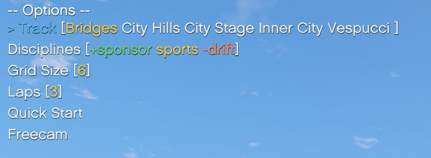

Main Menu

The main menu of ARS is brought up at any moment using the Sprint + Interact keys, Shift+E on keyboard.
This menu allows you to select a track, the lap number, the opponent vehicles, and how many opponents will participate in the race.
muscle street will, for example, select any car which is considered a Muscle car, or has a street tag on it.The input has a few modifiers to better choose what kind of vehicles you want summoned.
*tagwill mean that tag is priority. Cars with this tag will automatically be added regardless of any other rules.+tagwill mean that tag is required. All cars summoned need to have this tag.-tagwill mean that tag is prohibited. All cars summoned cannot have this tag.tagwill mean that tag is optional. If a car contains this tag, it will be included.
You can participate in the races by simply being in a vehicle when you hit Start. If you're on foot, you'll not participate.